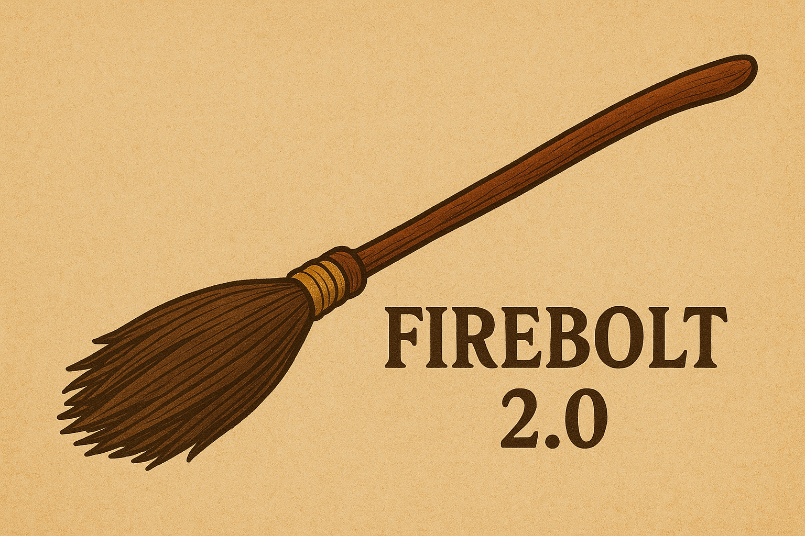

Firebolt 2.0: La Escoba más Rápida de la Historia ya en los Cielos
La Firebolt 2.0 fue presentada oficialmente, con una velocidad récord, encantamientos de seguridad mejorados y un diseño renovado. Jugadores profesionales de Quidditch y coleccionistas ya se disputan la oportunidad de conseguirla.

¡Irlanda Conquista el Campeonato Mundial de Quidditch!
En una final inolvidable, la Selección de Irlanda venció a Bulgaria y se coronó campeona del Mundial de Quidditch. El partido estuvo marcado por jugadas espectaculares, una afición entregada y el brillo de la nueva Firebolt 2.0.